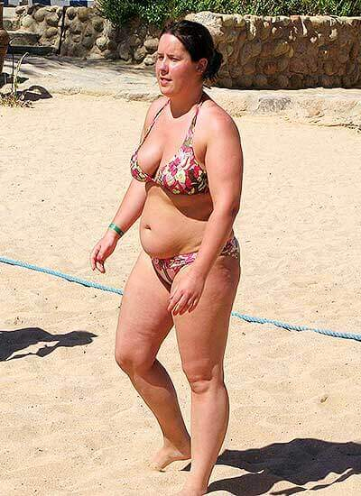
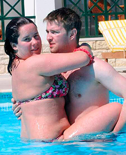
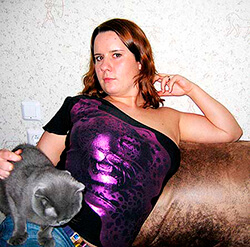
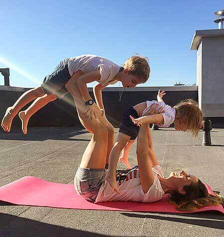
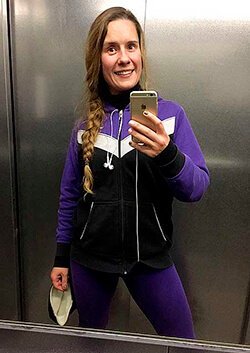
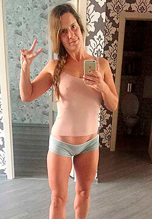

- 5 commenti
- condividi
- 5
Una ricetta dettagliata
Stanca di essere in sovrappeso? Non riesci a dimagrire? O, dopo aver dimagrito, subito ingrassi di nuovo? Vuoi indossare il tuo vestito preferito ma non riesci ad "entrarne", comprare bei vestiti per te è un problema enorme?

"Sono grata alle persone che mi chiamavano grassa e mi trattavano con condiscendenza. Se non fosse per loro, io ancora sarei rimasta la stessa, cioè una grassona!", — dice Marina Carli, che ha perso 26 kg. Per avere un corpo perfetto ha provato un sacco di diete diverse, ma poi ha scoperto un modo molto semplice e stranamente il più efficace. Di questo metodo, grazie al quale l'eccesso di peso non torna mai più, Marina ci ha raccontato in dettaglio. Ecco la sua storia suggestiva...
Non sono mai stata una ragazza snella, ma l'eccesso di peso non mi portò a diventare complessata. Dopo aver incontrato il mio futuro marito Simone, mi sono fin troppo rilassata, e mi sono reso conto solo quando sono diventata veramente grassa.
Dopo aver incontrato Simone, mi sono fin troppo rilassata, e mi sono reso conto solo quando sono diventata veramente grassa
Il nostro rapporto dura già da più di 7 anni, durante questo periodo abbiamo avuto due figli. Ma fino a poco tempo non convivevamo. Simone viveva nel suo appartamento, lavorava tanto, poi veniva da me. E poi tornava a casa.
Fin dall'inizio del nostro rapporto ho sempre aspettato, quando mi chiederà di sposarlo. Era il mio sogno!
Quando mi chiederà di sposarlo? Era il mio sogno!
Rimanendo incinta per la prima volta, pensavo che ora ci sposassimo finalmente. Ma non fu così. Simone veniva e partiva come sempre, io continuavo ad aspettarlo come sempre...
Quando è nato il figlio maggiore, eravamo molto felici. Simone ha riconosciuto il figlio, aveva cura di me e del piccolo, mi aiutava in tutto. Sentivo che ci amasse, ma il suo amore era particolare.
Quando il figlio ha compiuto 2 anni, abbiamo deciso di andare in vacanza tutti insieme per 2 settimane. Il mare, il sole e la sabbia. Mi mancavano così tanto le vacanze!
L’Egitto, con un albergo davvero buono, una bella spiaggia e il sistema all inclusive fu semplicemente una scelta perfetta per noi.
Ma poi sulla spiaggia ho notato che Simone a lungo osserva una ragazza. Non gli ho detto niente, ma ho deciso, a mia volta, di controllare Simone. All'inizio pensavo che si è innamorasse a prima vista. Ma più tardi ha cambiato l'oggetto della sua attenzione e cominciato ad osservare intensamente un'altra ragazza, poi la terza e così via, all'infinito!
Ero impazzita! Come fosse noi con il figlio non esistessimo.
Sì, perché a lui piacciono le ragazze magre!
Non ho mai voluto essere una stupida e gelosa, quindi, calmandomi un po’, ho cominciato ad analizzare. E mi subito resa conto che tutte queste ragazze, che lui osserva già da diversi giorni, avevano una cosa in comune — erano due volte più magre di me! Mi sentivo come se fossi stata colpita da un fulmine — gli semplicemente piacciono le ragazze magre! E forse proprio questo sia la ragione del suo comportamento nelle nostre relazioni???
Ho anche una foto in cui lui mi tiene tra le braccia, ma guarda all’ennesima "manico di scopa", rifatevi gli occhi:
Simone non mi ha mai detto che non gli piacesse il mio fisico. Non mi ha mai chiesto di dimagrire, nulla del genere. Ma non mi ha chiesto di sposarlo neanche, che aspettavo davvero tanto.
Questi pensieri non mi davano pace, e mi abbuffavo con gli ottimi piatti di all inclusive. Ho mangiato triplo per 2 settimane.
Al ritorno dalle vacanze mi sono pesata e sono rimasta di stucco. Dall'Egitto, oltre all'abbronzatura, ho portato 9,5 kg in più. Ero terrorizzata.
Ho cominciato a studiare la questione di perdita di peso in Internet, dopo un paio di settimane ho capito che sono rimasta incinta per la seconda volta! La vacanza fu feconda nel vero senso della parola. Mi capite che in quel stato non pensavo più di dimagrire...
Ma l'idea che io non piaccio come donna a Simone continuava a girare
Ma l'idea che io non piaccio come donna a Simone continuava a girare nella mia testa. Pensavo addirittura di abortire. Sono molto contenta che Simone mi ha proibito anche pensare di questo.
Così abbiamo avuto il secondo figlio, un altro maschietto. E tutto si ripeteva. Simone ha riconosiuto il figlio e aveva cura di noi continuamente, con il suo amore e tanta attenzione. Ma solo in quelle ore, quando era da noi. A casa mia non c’era nessuna sua cosa tranne lo spazzolino, mi occupavo dei bambini, cercando di non pensare a tutto questo.
Dopo aver finito di allattare, cominciavo a pensare di nuovo di perdere peso. Non riuscivo a dimenticare le vacanze, avevo davanti agli occhi Simone che guardava le ragazze magre con desiderio, e nel nostro rapporto non cambiava proprio nulla. Allora pesavo 88 kg tanto odiosi.
Allora pesavo odiosi 88 kg. E ho deciso di dimagrire!
E ho deciso di dimagrire! Ho provato di tutto: 10 diete diverse, allenamenti vari, impacchi, saune, massaggi speciali, e così via. Tutto questo non mi ha aiutato o mi ha aiutato solo per un po’ — appena perdevo peso, subito ingrassavo di nuovo.
Ma poi ho incontrato al supermercato, al banco di pasticceria, una ragazza che si chiamava Olivia , con la quale ci siamo conosciute quando dovevo partorire il secondo figlio. L’ha riconosciuta appena, era già allora più snella di me, ma adesso è diventata quasi 3 volte più magra che dopo il parto!!!
— È incredibile! — esclamò io invece di salutarla. — Ti guardo e non credo ai miei occhi! Olivia, ma sei davvero tu?!
— Sì, sono leggermente dimagrita, vero? —disse lei sorridendo e acquistando i dolci.
— E continui a mangiare dolci?! Come ci riesci? Come??? Ho provato di tutto: sport, diete, saune di tutti i tipi, ho davvero provato di tutto! E al massimo ho perso 3 kg in una settimana, e poi subito mi ingrassavo di sette chili! — ho quasi urlato di disperazione, ricordo bene quel momento perché le persone si giravano a guardarmi.
— Marina, quali diete, saune, che cosa stai dicendo? Insomma, con te è tutto chiaro. Vieni da me, mio marito ora è al lavoro, il figlio è all'asilo, vieni per un caffè. Ho già compato le torte, così parliamo, — mi invitò Olivia, — ti racconterò tutto, faccio vedere e anche provare.
— Marina, quali diete, saune, che cosa stai dicendo?
Ero davvero incuriosita e ho accettao subito l’invito. Tanto Simone il giorno successivo è doveva andare in viaggio di lavoro per 2 settimane, quindi il giorno precedente si era completamente dedicato ai bambini. E io potevo rilassarmi un po'.
Olivia ha perso 33 kg in soli 3,5 mesi dopo aver finito l'allattamento al seno. Non ha seguito nessuna dieta, non moriva di fame e non andava in palestra. Viveva la sua vita normale, senza alcuna limitazione nel mangiare.
Il suo corpo è diventato snello come di una ragazza molto giovane. Un forte dimagrimento, stranamente, non ha lasciato sulla sua pelle nessuna smagliatura. Allora ho pensato che mio Simone la avrebbe mangiato con i suoi occhi.
Ma la cosa più sorprendente era che ho scoperto, quanto è facile era per lei dimagrire, quanto semplice e sicuro chiunque può sbarazzarsi di eccesso di peso. La ricetta dimagrante mi ha semplicemente scioccato!
Ricordo troppo bene che cosa ho provato, cercando di dimagrire. Era un inferno! Ricordo di cadere in depressione seguendo le diete rigide, come abbiamo sempre litigato con Simone, le recidive quando cominciavo a mangiare senza sosta. E mi odiavo per questo.
Ho fatto le cose veramente spiacevoli e anche inutili, non sapevo che si potesse dimagrire in modo diverso. Ma non ero molto arrabbiata, perché ora sapevo cosa dovevo fare.
E adesso ascoltate attentamente quello che mi ha detto Olivia!
Il prodotto dimagrante più potente è il carbone attivo. Entrando nel corpo, rimuove le sostanze tossiche da esso tramite due meccanismi. In primo luogo, grazie all'assorbimento e alla struttura porosa. In secondo luogo, grazie alla riduzione catalitica (un processo che costringere gli ioni carichi negativamente delle sostanze inquinanti di attaccarsi agli ioni carichi positivamente del carbonio).
l carbone attivo lega le tossine presenti nel corpo umano e rimuove loro rapidamente attraverso l'intestino.
Curiosamente, la maggior parte delle proprietà benefiche del carbone attivo furono scoperte dagli abitanti dell'antica India e dell'antica Cina, che con l'aiuto del carbone purificavano l'acqua per le bevande e il vino. Qualche secolo dopo, i nutrizionisti hanno riconosciuto il carbone attivo uno dei migliori rimedi per la disintossicazione.
A casa Olivia mi ha fatto un caffè latte. Non normale però, bensì nero. All'inizio ero sorpresa. Ma il gusto della bevanda era uguale a un normale caffè latte, era delizioso.
"Ecco il segreto del mio dimagrimento: il caffè latte nero al carbone ", - ha detto Olivia. E mi ha mostrato la confezione con una polvere nera, della quale ha ottenuto la bevanda.
"Ecco il segreto del mio dimagrimento: il caffè latte al carbone ", - ha detto Olivia. E mi ha mostrato la confezione con una polvere nera, della quale ha ottenuto la bevanda. Non c'era bisogno di usare una macchina da caffè speciale. Si poteva semplicemente diluire la polvere in una tazza con acqua bollente.
È sufficiente berlo una volta al giorno, meglio al mattino. Così tutte le calorie in eccesso che arriveranno durante il giorno non si accumuleranno nei depositi di grasso. Lo immaginate? È semplicemente un sogno!
— Ma è una cosa incredibile! Così semplice? — sbottò io allora.
— Puoi credermi o no — è, ovviamente, la tua scelta. Se ti piacciono le difficoltà — puoi continuare sul percorso difficile. Volevi sapere come ce l'ho fatta? Te l'ho detto. E ora pensaci tu. Non sono un venditore, non ho intenzione di farti comprare qualcosa da me. Se vuoi — prova. Se non vuoi — non provare, bevi l'acqua e basta, puoi anche smettere di mangiare. A proposito, vuoi una ciambella? — chiese Olivia, tendendo in mano il mio dolce preferito.
— No, grazie. Devo andare a casa.
Allora non sapevo che quell’ora e mezzo avrebbe capovolto la mia vita...
Ci siamo scambiati i numeri di telefono e me ne sono andata. Sono stata da Olivia per un'ora e mezza. Allora non sapevo che quell’ora e mezzo avrebbe capovolto la mia vita...
Sono tornata a casa molto agitata. Ho acceso subito il computer e ho ordinato questo sul sito che mi ha indicato Olivia. Dopo 3 giorni mi hanno consegnato la confezione preziosa e ho iniziato la mia trasformazione!
Mi sono pesata. La bilancia mi ha mostrato 88,4 kg. Da quel momento ogni mio giorno necessariamente includeva il consumo di una tazza di caffè latte ogni mattina.
La mattina seguente sono salita di nuovo sulla bilancia — ho visto 88,5 kg. Più di 100 grammi! Ero veramente delusa! Mi è venuto quasi il panico.
Ho chiamato Olivia.
— Marina, calmati. Il peso comincia a diminuire dopo 4-5 giorni. Continua a prenderli. Lascia perdere la bilancia per 5 giorni. Poi ti peserai e vedrai che accadrà, — la risposta di Olivia fu intrigante.
Quindi, continuavo. Senza cambiare nulla nella mia alimentazione, ogni giorno bevevo una tazza di al mattino — ero davvero curiosa, che cosa mi aspetterà. Non ci credevo ancora molto di poter dimagrire senza cambiare nulla nelle abitudini alimentari e nello stile di vita.
Al 6 ° giorno di mattina ero troppo emozionata, ma mi avvicinò alla bilancia, mi sono salita e ho chiuso gli occhi. Avevo tanta paura di vedere il numero sulla bilancia, ma dopo un paio di secondi ho finalmento aperto gli occhi. La bilancia mi indicava 83,3 kg.
Ho perso 5 chili e 100 grammi nei primi 5 giorni, senza cambiare nulla nel mangiare e senza alcun esercizio fisico!
So a memoria quelli primi numeri del mio successo. Era incredibile! Il cuore mi batteva all’impazzata, riuscivo a malapena a respirare dall'emozione! Il caffè latte funzionava!!!
Per tutta la settimana seguente la mia dieta era quella di sempre. Tranne il fatto che ogni giorno prendevo una tazza di ormai così amato .
Resistevo e non mi pesavo, ma anche senza bilancia sentivo di perdere peso. A volte provavo una piacevole sensazione di calore nelle braccia, pancia e cosce. La mia energia si è aumentata, non mi sentivo così energica già da tempo. Non avevo più una costante sensazione di stanchezza.
Dopo una settimana mi sono salita sulla bilancia, e poi sono quasi svenuta. Ho visto soli 74,7 kg. Cioè, in una settimana seguente ho perso quasi 9 kg!
In 12 giorni sono diventata più leggera di 13 chili e 700 grammi!!!
Provate a immaginare che in questo preciso momento siete dimagrite. Immaginate che cosa vi sentite. Sentite una gioia pazzesca, sentite un piacere. Così potete capire quello che ho provato io.
Certo, sentivo prima che il mio abbigliamento diventasse già troppo "largo" per me. Ma in meno di 2 settimane perdere quasi 14 kg — non riuscivo a credere ai miei occhi!
Simone doveva tornare dal viaggio tra 2 giorni. Mi sentivo volare, immaginando la sua reazione al mio cambiamento. Anche i bambini aspettavano il ritorno del papà con dei regali, dato che lui sempre ci portava qualcosa dai suoi viaggi di lavoro.
Nel giorno del suo arrivo abbiamo preparato una bella cena, abbiamo cucinato tanti piatti deliziosi e anche, per la prima volta in molti anni, ho fatto la sua torta preferita. Non avevo più paura di mangiare dolci!
Simone è arrivato proprio al punto in cui abbiamo apparecchiato la tavola. I bambini, dopo aver sentito il suono della porta che si apriva, si sono precipitati nel corridoio, per incontrare il papà.
La porta si è spalancata, sulla soglia c'era Simone con un grande mazzo di fiori e tante scatole con i regali. I bambini abbracciavano il papà, e lui, notandomi sopra le loro teste, è rimasto di stucco. Le scatole sono cadute dalle sue mani sul pavimento. Anche il mazzo è caduto accanto.
I bambini saltavano dalla felicità, aprendo le scatole, Simone invece non riusciva a distogliere lo sguardo da me, poi si è chinato per raccogliere i fiori.
Dopo pochi secondi siamo rimasti soli nel corridoio. Simone stava con un mazzo di fiori, come se fosse incantato. Sono scoppiata a ridere, togliendogli i fiori di mano.
— Beh, cosa stai facendo? Entra, dai!
— Tu....Sei .. Ma come??? — Simone non riusciva a riprendersi.
— Beh, mi baci o continuerai a stare in piedi?
Simone ad un tratto mi ha afferrato, mi ha preso in braccio e ha cominciato a baciarmi, il che mi ha fatto ancora più ridere. Era proprio contento, istintivamente sentivo che gli piaccio da morire.
— OK, basta, mettimi a posto, laviamo le mani e andiamo a mangiare.
Tutta la sera Simone era eccitato, e quando ho messo a letto i bambini, mi ha sbranato come se fosse la prima volta. È stata una notte d’amore folle che non riuscirò a scordare mai — non mi sono mai sentita così desiderata da tantissimi anni. Completamente esausti, ci siamo addormentati solo la mattina.
La mattina seguente Simone improvvisamente, senza alcuna ragione apparente, ha proposto di andare tutti insieme al mare, per 10 giorni. Gli affari andavano a gonfie vele, così lui come ricompensa ha avuto la possibilità di andare in vacanza con un buon premio.
Ero al settimo cielo dalla felicità — un mattino così buono non ricordavo da molto-molto-molto tempo!
Allora lavoravo come contabile per diverse aziende, lavorando principalmente da casa. Non avevo tante scadenze, quindi potevo facilmente andare in vacanza per 1-2 settimane, quindi, ho accettato senza esitare. Anche i bambini erano felicissimi — perché presto potremmo andare al mare!
Questa volta la scelta è caduta sulla Grecia. Abbiamo preso un ottimo hotel di 4 stelle. Sempre con all inclusive: qualsiasi cibo in quantità illimitata — una dura prova per la mia ricetta segreta! E, naturalmente, non vedevo l'ora di osservare il comportamento di Simone in vacanza.
Tutta la sua attenzione era concentrata solo su di me. Sì, è stata una mia vittoria personale!
Dopo una settimana, prendevamo il sole su una spiaggia greca, godendo il mare incredibilmente pulito e la musica delle onde. Simone non toglieva gli occhi da me e non mi lasciava nemmeno per un minuto. Tutta la sua attenzione era concentrata solo su di me. Non ho mai notato, che lui osservava qualche altra donna. Sì, è stata una mia vittoria personale!
Mangiavamo "a crepapancia", senza alcuna limitazione. Carne, patate, birra, uova strapazzate con pancetta, panini, torte — mangiavo tutto questo e anche di più. Ma mangiavo a piccole porzioni, non mi abbuffavo. Naturalmente, ogni giorno non dimenticavo di prendere una tazza di .
La sera, dopo aver messo a letto i bambini stanchi dalle attività durante la giornata, noi con Simone bevevamo il vino in piedi, abbracciati sul balcone della nostra camera, parlavamo e guardavamo la luna. Poi Simone mi prendeva in braccio e mi portava in camera da letto, dove facevamo l'amore con una passione, la quale non è mai stata fin dall’inizio del nostro rapporto. E così era ogni giorno. Mi sentivo divinamente!
L'ultima notte prima della partenza, Simone sul balcone all’improviso mi ha chiesto di chiudere gli occhi. Ho chiuso gli occhi e ho sentito, come lui è andato in camera e poi è tornato rapidamente.
— Apri! — mi ha detto Simone eccitato.
Ho aperto gli occhi. Davanti a me ho visto Simone in ginocchio. Sul palmo della mano lui teneva un anello.
— Marina, sposami!
Sono sbiancata. Ho aspettato questo momento per 7
lunghi anni!
Ogni giorno aspettavo queste parole da lui. Le sognavo, molte volte lo immaginavo. Ho sentito le lacrime che cominciavano a scendere velocemente.
— Stai scherzando? — allora non sono riuscita a dire niente di piu intelligente.
— Neanche un po’! Sei la più bella donna del mondo, voglio che tu sia mia moglie. Davvero! Non voglio più arrivare e poi ripartire. Voglio stare con te per sempre!
Ho cominciato a piangere, ho abbracciato Simone, gli ho sussurrato tra le lacrime: "Lo voglio anche io!"
All'arrivo a casa siamo subito andati al comune e in chiesa.
Ho dimenticato di controllare il mio peso. Quando l’ho fatto, ho scoperto che in 10 giorni di una vacanza all inclusive ho perso 7,5 kg grazie a .
Con tutti questi eventi, ho dimenticato di controllare il mio peso. Mi sono pesata solo quando siamo tornati. Questa volta in 10 giorni di una vacanza all inclusive, grazie a , ho perso 7,5 kg. Certamente, non 1 kg al giorno come era all'inizio, ma mangiavo molto di più durante la vacanza, non come di solito.
E poi, non cercavo più di perdere peso con ostinazione. Ho cominciato a bere un giorno sì e uno no. Nonostante questo, per il matrimonio ho perso altri 5 kg.
Il nostro matrimonio è stato molto divertente, ho invitato anche Olivia — con lei siamo diventate molto amiche. Le sono immensamente grata per una ricetta dimagrante incredibilmente semplice.
Simone ha ammesso che voleva sempre che io fossi più snella.
Più tardi Simone mi ha confessato che Il mio cambiamento l’ha fatto impazzire. Ha ammesso che voleva sempre che io fossi più snella, che continuamente mi immaginava esattamente così come sono diventata ora. Certo, non me l'ha mai detto perché non voleva offendermi. È un uomo molto sensibile!
P.S. Già da 3 mesi siamo con Simone ufficialmente marito e moglie. Ora vogliamo vendere i nostri due appartamenti per comprare uno più grande, spazioso e confortevole.
Ora peso 62 chili e 300 grammi e il mio peso è stabile, nonostante il fatto che da un mese ho smesso di bere . Alla fine ho perso 26 chili e 100 grammi e, anche dopo più di 7 anni della nostra relazione, ci amiamo con Simone tantissimo. È una sensazione fantastica, che l’ho meritato!
Ho perso 26 chili e 100 grammi. Il mio sogno si è avverato!

Il mio sogno si è avverato! Si è rivelato anche molto meglio di quello che ho sempre sognato! Sì, il caso mi ha aiutato quando ho incontrato Olivia. Ma era solo un'occasione. Che ho sfruttato con successo.
Le occasioni del genere può avere ogni persona, anche se molto raramente. Ma molte persone a causa di problemi, mancanza di soldi e sfiducia perdono le loro occasioni.
Cercate sempre di capire la vostra occasione: in tutti gli eventi intorno a voi, nella gente che per qualche motivo si trovano sul vostro percorso di vita, nelle storie che per qualche motivo state leggendo, in tutto! E dopo aver individuato l’occasione — sfruttatela con tutte le forze! È il più grande segreto per raggiungere la vera felicità. Utilizzando la vostra occasione, vedrete che la vostra vita sarà migliore, anche se ora non potete nemmeno immaginarlo.
Quando ho ascoltato Olivia, anche a me all'inizio sembrava che questo non accadesse mai. Ma ho provato la sua ricetta, ho provato perché non mi sono data per vinta. Potevo soltanto sorridere in modo scettico e non fare nulla. Ma così non sarebbe cambiato nulla! Inoltre, non avrei neanche scoperto di aver perso la mia occasione...
Per coloro che sono fermamente hanno deciso di essere felici, belle, attraenti e irresistibilmente desiderate, io farò lo stesso che ha fatto per me Olivia, quando sono venuta a casa sua. Vi mostrerò dove si può trovare il sito del produttore di di cui lei mi ha raccontato. Basta fare clic sul pulsante verde con la scritta "VAI AL SITO DEL PRODUTTORE" qui sotto e si aprirà. Tutto il resto è nelle vostre mani.
Commenti
Dovevi mangiare di meno fin dall'inizio!
La colpa è tutta sua! Non stava bene con la testa, come si può ingrassare fino a 90 kg? Certo che l’uomo guarda le altre. Io non sono grassa, ma con sono dimagrita durante la primavera. Meno 8 kg in un paio di settimane, ha funzionato perfettamente. Nessuna smagliatura! Perché seguire le diete, torturare se stesse con gli impacchi???
sì, prima abbuffarsi per arrivare a pesare un quintale, e poi chiedere perché non la vogliono sposare. è chiaro che agli uomini piacciono le ragazze snelle.
Ho letto tutto, ho guardato le foto e ho capito, che non tutti si guardano allo specchio. Da qui derivano tutti i problemi. Anche io ero così, ero veramente grassa, e anche io poi ho preso questo . Il risultato è meno 19 kg. Resta inteso che molti cominciano a non mangiare niente o fare tanto sport, perché non credono in rimedi diversi. Ma se non proverai non lo saprai mai.
ho anche pianto quando ho letto della sua proposta di matrimonio, è bello sapere che c'è un tale amore e le coppie così affiatate!?
Che bello! Mi piacerebbe essere così snella dopo il secondo parto! Bravissima!
Volevo chiedere, se questo fosse adatto a tutte?! Mia mamma ha 56 anni, sarà adatto per lei?
Elvira, anche mia mamma ha 59 anni, con il caffè latte è dimagrita di 12 kg, è diventata come me. Tutto bene, non ci sono controindicazioni, è il prodotto al 100% naturale.
Io e mia moglie insieme abbiamo perso peso con . Lei l’ha ordinato immediatamente quando è stato disponibile in Italia. Alla fine lei ha perso 13 chili, io invece - 18 kg. Mia moglie è diventata una modella, con una pelle soda e tonica. Non ho più la mia pancia da birra, ho anche un po’ di nostalgia per essa!
Vincenzo, Lei si ricorda dove Sua moglie l’ha ordinato? All'inizio è sempre tutto molto buono, con il tempo però attivano tanti ptodotti falsi, truffatori e così via.
L’ha ordinato direttamente sul sito del produttore, lo stesso che è indicato nell'articolo, con il pulsante verde. Ecco il link: clicca qui per andare al sito web .
È una notizia meravigliosa, ora si può mangiare qualsiasi dolce senza preoccuparsi, che alla fine della settimana gli abiti e le gonne saranno strette)) Semplicemente stupendo!
Ho perso 12 chili nel primo mese, ancora 8 chili nel secondo, ora continuo a bere . Penso che entro la fine di questo mese il peso perso in totale sarà di circa 25 chilogrammi. È un risultato sorprendente in soli tre mesi. Non credete quando vi dicono che è impossibile dimagrire senza dieta.
Alice, potresti mostrare le tue foto prima e dopo, sarebbe molto interessante!!!!
Ma certo, non mi vergogno. Ecco, ho fatto nello smartphone un collage di due foto: prima e dopo
Wow, grazie!!!!!!! Ma anche prima eri proprio bella!!!!
Ehi sì, ma mio marito mi ha lasciato sei mesi fa, per tornare da me un mese fa. L’ho chiesto: perché sei tornato? Mi ha risposto: sei così bella ora, che non mi sarei mai allontanato da te
In un mese ho pesto solo 9 chili, ero delusa - mi aspettavo di più. Quindi, meno 15-20 chili al mese è una bufala.
Mi piace che il dimagrimento è graduale e non traumatizza il corpo. In una settimana perdo 3-4 chili stabilmente. In un mese ho perso già 12 chili! Non è così poco, non mi posso lamentare!!!
Ieri mi hanno consegnato , subito al mattino ho preso una tazza di . E ho capito che non voglio mangiare nulla!!! Blocca la sensazione di fame, è semplicemente perfetto, ora aspettiamo i risultati. Per me sarebbe bello di perdere anche 200 g al giorno
Donatella, puoi farmi vedere le foto di questo prodotto?
Certo, eccole
o avuto una brutta esperienza con . Non lo posso suggerire a nessuno. Volevo perdere solo 1-2 chili, ma alla fine sono dimagrita di quasi 7 chili. Non volevo dimagrire così tanto, ma non dipendeva da me - mangiavo, mangiavo, ma comunque perdevo peso. Ora sto cercando di ingrassare un po’.
Ragazze, perché siete così cattive? Mangiare devi di meno, la colpa è tutta tua, e così via. Quando ti vedi nello specchio ogni giorno, certi cambiamenti non li noti. Qui qualcuno ha detto la verità: nello specchio non ti vedi chiaramente. Capisco Marina e la sua situazione. E sono felice per lei. Lei prima non credeva di poter facilmente dimagrire, dato che ora scrivono troppo sui vari rimedi dimagranti. E infatti, l ‘80% o il 90% di essi non funzionano per niente. Che cosa lei poteva fare? Non sapeva che fosse così efficace. E non solo lei, molte donne ancora non lo conoscono.
Ma chi non lo conosce? Una mia vicina di casa lo scorso dicembre ha iniziato a prendere questo prodotto. Così per il Natale ha indossato un vestito di sera che ha comprato 10 anni fa! In un mese è dimagrita di 12 chili, tutti i nostri uomini si giravano a guardarla, eravamo già gelose di lei.
Simone è un tesoro)))? Marina doveva prendersi cura di se stessa da tanto tempo. Naturalmente, la colpa è sua se era grassa. Eppure lei era arrabbiata con lui, ha ha! Ovviamente, gli piacciono le ragazze magre, cosa c’è di strano? Avrebbe dovuto dire grazie che nessuna di loro non le ha portato via il suo uomo. Alessandra dice la verità, chi non conosce ? Soltanto quelle che non controllano il loro peso. Tutte le donne che volevano dimagrire, sono già diventate più snelle con l’aiuto di caffè latte. E non c’entra credere o non credere!